품질경영기사 (2012-03-04 기출문제)
1과목: 실험계획법
1. x와 y간의 상관관계 여부에 관한 t검정을 하고자 한다. 표본의 크기(n)가 150 이고 상관계수(r)가 0.61 이었다면 검정통계량(t0)의 값은 약 얼마인가?
- 9.365
- 9.428
- 10.365
- 11.428
(정답률: 64%)

2. L27(313)직교배열표에서 인자 A, B, C, D 와 교호작용 B×C를 배치하는 경우 오차항의 자유도는?
- 10
- 12
- 14
- 16
(정답률: 65%)
3. 수준수 l = 4, 반복수 m = 3 인 모수모형 1원 배치실험에서
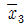
=8.92, ST=2.383, SA=2.011 이었다. 이때 μ(A3)를 유의수준 0.01로 구간추정하면 약 얼마인가? (단, t0.99(8)=2.896, t0.995(8)=3.355 이다.)- 8.502 ≤ μ(A3) ≤ 9.338
- 8.558 ≤ μ(A3) ≤ 9.232
- 8.558 ≤ μ(A3) ≤ 9.282
- 8.608 ≤ μ(A3) ≤ 9.232
(정답률: 60%)
4. 1원 배치법에서의 대비에 의한 변동 분해에 관한 설명으로 옳은 것은?
- 선형식의 계수들의 제곱합을 선형식(L)의 단위수(D)라고 한다.
- 선형식(L)을 그 단위수(D)로 나눈 것을 선형식의 변동(SL)이라 한다.
- 선형식을 이루고 있는 계수가 모두 0 이 아니며, 또한 이들의 합이 0 일 때 직교한다고 정의한다.
- 선형식 L1과 L2가 서로 직교할 때에는 일반적으로 인자가 분산분석을 해도 유의하지 않게 나타난다.
(정답률: 48%)
5. 다음 중 다구찌 방법의 파라메타 설계 단계에서 SN비를 최대화하는 파라메타의 최적 수준을 찾기 위해 사용되는 것은?
- 1원배치법
- 2원배치법
- 다원배치법
- 직교배열표에 의한 실험계획
(정답률: 72%)
6. 32형 요인의 실험을 동일한 환경에서 실험하기 곤란하여 3개의 블록으로 나누어 실험을 한 결과 다음과 같은 데이터를 얻었다. 인자 A의 변동은 얼마인가?
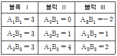
- 6
- 7
- 8
- 9
(정답률: 76%)
7. 1차 단위 인자 Ai(l 수준), Bi(m 수준)와 2차 단위 인자 Ck(n 수준)가 모두 모수인자인 단일분할법에서 데이터의 구조식으로 가장 적합한 것은?
- xijk=μ+ai+bj+e(1)ij+ck+(ac)ik+e(2)ijk
- xijk=μ+ai+bj+e(1)ij+ck+(ac)ik+(bc)jk+e(2)ijk
- xijk=μ+ai+ck+e(1)ij+bj+(ac)ij+(bc)jk+e(2)ijk
- xijk=μ+ai+bj+(ab)ij+e(1)ij+ck+(ac)ik+(bc)jk+e(2)ijk
(정답률: 60%)
8. 어떤 실험에서 원료(A)를 3수준, 온도(B)를 2수준, 압력(C)를 2수준으로 하여 강도를 조사한 결과가 [표] 와 같을 때, ST는 약 얼마인가?
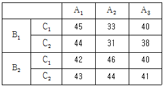
- 216.693
- 229.417
- 236.917
- 308.034
(정답률: 73%)
9. 계수치 데이터 반복있는 2원 배치 실험에서 각 인자의 수준수가 l = 3, m = 3 이고 반복수 r = 100 인 실험에서 Ai,Bj의 9개 조합에서 하나의 조합조건을 랜덤하게 선택한 후 100번의 실험을 마치고 다음으로 나머지 8개의 조합에서 또 하나를 선택하여 100번 실험하는 방법으로 진행시켜 모두 900번의 실험을 할 때 2차 오차항의 자유도
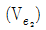
는 얼마인가?- 4
- 9
- 891
- 896
(정답률: 80%)
10. 반복수가 다른 1원배치법의 데이터가 다음과 같을 때, 총 변동(ST)은 약 얼마인가?
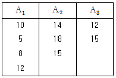
- 126.9
- 132.1
- 1143.1
- 1147
(정답률: 73%)
11. 반복이 있는 2원배치법에 있어서 교호작용항을 오차항에 풀링(Pooling)할 것인가에 관한 일반적인 조건으로 가장 거리가 먼 것은?
- 실험의 목적에 따라서 결정된다.
- 제1종의 과오를 고려하여 결정된다.
- 제2종의 과오를 고려하여 결정된다.
- 기술적 지식, 통계적인 면에 따라서 결정된다.
(정답률: 59%)
12. 단일 인자인 온도에 대해 3 수준의 실험을 실시하려 한다. 온도의 각 수준은 실험자의 경험에 따라,100℃, 120℃, 140℃로 설정하였다. i번째 수준에서 m번 반복한 실험 결과인 xij에 대하여 xij=μ+ai+eij로 모형을 설정하였다. 이 모형에 대한 가정으로 옳은 것은? (단, i =1, 2, 3, j=1, 2, …, m 이다.)
- a i ≥0
- a1 + a2 = -a3
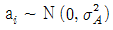
- ai 의 기댓값은 0 이다.
(정답률: 57%)
13. 지분실험법(nested design)에 관한 설명으로 옳지 않은 것은?
- 일반적으로 변량인자들에 대한 실험계획으로 많이 사용된다.
- A1에 속해있는 B1과 A2에 속해 있는 B1은 동일한 것이 아니다.
- A, B, C 모두 대응이 없는 변량인자이므로 A×B, A×C, B×C 등의 교호작용을 생각하여야 한다.
- 로트간, 로트 내의 산포, 작업자간의 산포, 측정의 산포를 추정하여 측정방법 등을 검토하기 위하여 사용된다.
(정답률: 57%)
14. 인자의 수준과 수준수를 택하는 방법으로 가장 거리가 먼 것은?
- 현재 사용되고 있는 인자의 수준은 포함시키는 것이 바람직하다.
- 실험자가 생각하고 있는 각 인자의 흥미영역에서만 수준을 잡아준다.
- 특성치가 명확히 나쁘게 되리라고 예상되는 인자의 수준은 흥미영역에 포함된다.
- 수준수는 보통 2~5 수준이 적절하며 많아도 6 수준이 넘지 않도록 하여야 한다.
(정답률: 63%)
15. [표 1]은 모수인자 A와 블럭인자 B에 대해 난괴법 실험을 하는 경우이며 [표 2]는 블럭인자 B를 반복으로 하는 인자 A의 1원 배치실험으로 변환시킨 경우이다. 이때 A의 제곱합 SA에 관한 설명으로 옳은 것은?
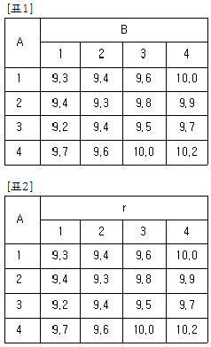
- 난괴법에서의 A의 제곱합 SA보다 1원 배치의 제곱합 SA가 더 크다.
- 난괴법에서의 A의 제곱합 SA보다 1원 배치의 제곱합 SA가 더 작다.
- 난괴법에서의 A의 제곱합 SA와 1원 배치의 제곱합 SA는 값이 같다.
- 난괴법에서의 B의 제곱합 SB와 SA를 합한 것과 1원 배치의 제곱합 SA는 값이 같다.
(정답률: 67%)
16. 반복이 있는 2원배치 혼합모형에서 다음과 같은 분산분석 표를 구했다. ( ① )에 들어갈 값은 얼마인가? (단, A는 모수인자, B는 변량인자이다.)
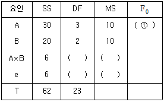
- 10
- 15.4
- 20
- 30
(정답률: 50%)
17. 라틴방격법에 관한 설명으로 가장 거리가 먼 것은?
- 수준수(k)는 2 이상이어야 한다.
- 인자간의 교호작용의 효과를 구할 수 없다.
- 3수준인 경우 3원배치법보다 더 적은 실험이 가능하다.
- 3인자의 실험에 쓰이며 각 인자의 수준수가 반드시 동일해야 한다.
(정답률: 48%)
18. 23 요인실험을 abc, a, b, c 4개의 조합만에 의한 일부 실시법에 의해 실험하려고 한다. A의 주효과를 구하는 식으로 옳은 것은? (단, 1/2 블럭 반복의 실험이다.)
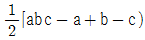
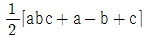
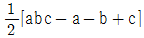
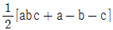
(정답률: 76%)
19. 실험계획에서 필요한 요인에 대한 정보를 얻기 위하여 2인자 이상의 무의미한 고차의 교호작용의 효과는 희생시켜 실험의 회수를 적게 하도록 고안된 실험계획법은?
- 교락법
- 난괴법
- 분할법
- 일부실시법
(정답률: 57%)
20. 2수준계 직계배열표
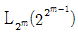
에 관한 설명으로 옳은 것은?- 모든 행은 서로 직교를 이루고 있다.
- 가장 작은 직교배열표는 m이 3일 때이다.
- 각 열은 (0, 1), (1, 2), (+1, -1) 또는 (+, -) 등의 기호나 숫자로 표시되어 있다.
- 직교배열표 상에서 총 변동의 자유도는 행의 수와 같다.
(정답률: 62%)
2과목: 통계적품질관리
21. 두 집단으로부터 추출된 n쌍의 자료를 이용하여 두 집단 간의 모상관계수가 존재하는지(
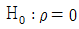
)를 검정하고자 할 때 사용되는 검정통계량의 자유도는?- n-1
- n-2
- 2n-1
- 2n-2
(정답률: 58%)
22. 모집단과 시료에 관한 설명으로 가장 적절한 것은?
- 측정 정도가 좋아지면 정확도가 높아진다.
- 정규 모집단에서 랜덤으로 취한 n개의 시료평균분산은 모분산의 1/n에 수렴한다.
- 정규 확률지상의 두 직선은 모평균이 대등하고 모표준 편차가 다를 때 평행한 두 직선이 된다.
- 정규 모집단에서 랜덤으로 n개의 시료를 발취했을때 이 시료에서 모분산을 추정하려면 편차제곱합의 1/n을 사용하면 가장 치우침이 적다.
(정답률: 23%)
23. 계수치 축차 샘플링 검사방식(KS Q ISO 8422 : 2009)에서 PA(PRQ)에 관한 설명으로 가장 적절한 것은?
- 될 수 있으면 합격으로 하고 싶은 로트의 부적합품률의 상한
- 될 수 있으면 합격으로 하고 싶은 로트의 부적합품률의 하한
- 될 수 있으면 불합격으로 하고 싶은 로트의 부적합품률의 상한
- 될 수 있으면 불합격으로 하고 싶은 로트의 부적합품률의 하한
(정답률: 64%)
24. 모집단을 몇 개의 층으로 나누고 나눈 각층으로부터 그 층내의 표준편차와 층의 크기에 비례하여 샘플을 취하는 샘플링 방법은?
- 데밍 샘플링
- 네이만 샘플링
- 지그재그 샘플링
- 층별 비례 샘플링
(정답률: 28%)
25. 임의의 공정에서 추출된 크기 9의 시료에 들어 있는 특수 성분의 함량(g)을 조사하였더니
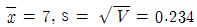
이었다. 모분산을 모를 때, 모평균의 95% 신뢰구간은 약 얼마인가? (단, t0.975(8)=2.306 이다.)- 6.63~7.37
- 6.80~7.20
- 6.82~7.18
- 6.84~7.26
(정답률: 61%)
26. 샘플링 검사에서 발생할 수 있는 오류에 관한 설명으로 가장 거리가 먼 것은?
- 생산자 위험과 소비자 위험은 비례관계가 성립한다.
- 생산자 위험과 소비자 위험은 근본적으로 샘플링 오차에 기인하는 것이다.
- 소비자 위험이란 불만족스러운 품질의 로트가 검사에서 합격 판정받을 가능성을 확률로서 표현한 것이다.
- 생산자 위험이란 충분히 좋은 품질의 로트가 검사에서 불합격 판정받을 가능성을 확률로서 표현한 것이다.
(정답률: 81%)
27. c관리도와 u관리도에 관한 설명으로 옳지 않은 것은?
- 표본의 크기가 일정하지 않을 때 u 관리도를 사용한다.
- 표본의 크기가 일정하지 않을 때 u 관리도의 중심선은 변하지 않는다.
- 표본의 크기가 일정 할 때 c 관리도의 중심선은 변하지 않는다.
- 표본의 크기가 일정하지 않을 때 u 관리도의 관리 한계는 변하지 않는다.
(정답률: 45%)
28. 관리도에서 관리하여야 할 항목은 일반적으로 시간, 비용 또는 인력 등을 고려하여 꼭 필요하다고 생각되는 것이어야 한다. 이러한 항목에 관한 설명으로 가장 부적절한 것은?
- 가능한 한 대용특성을 선택하는 것은 피할 것
- 제품이 사용목적에 중요한 관계가 있는 품질특성일 것
- 공정의 적합품과 부적합품을 충분히 반영할 수 있는 특성치일 것
- 계측이 용이하고 경비가 적게 소요되며 공정에 대하여 조처가 쉬울 것
(정답률: 64%)
29. 한 로트에 10개의 제품이 들어있는데 이 중 4개가 부적합품이다. 여기서 임의로 3개의 제품을 취했을 때 그 중 1개 이하가 부적합품일 확률은 약 얼마인가?
- 0.25
- 0.5
- 0.67
- 0.8
(정답률: 54%)
30. σ 기지(旣知)의 계량 규준형 1회 샘플링 검사방식에서 시료의 크기(n)가 10, 합격판정계수(k)가 1.8이라면 σ 미지(未知)의 표준편차를 사용하는 계량 규준형 1회 샘플링 검사방식에서의 시료의 크기는 약 얼마인가?
- 27
- 29
- 31
- 33
(정답률: 53%)
31. L-S 관리도에서
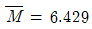
이고,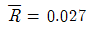
이었다면, L-S 관리도의 관리상한과 관리하한은 각각 약 얼마인가? (단, n = 5 일 때, A2 = 0.58, A9 = 1.36, D4 = 2.11 이다.)- UCL = 6.445, LCL = 6.413
- UCL = 6.466, LCL = 6.392
- UCL = 6.466, LCL = 고려하지 않는다.
- UCL = 6.486, LCL = 고려하지 않는다.
(정답률: 49%)
32. 종래 한 로트에서 발견되는 부적합수는 평균 12개 이었다. 작업방법을 개선한 후 하나의 로트를 뽑아서 부적합수를 세어보니 7개이었다. 평균 부적합수가 줄었는지를 유의수준 5%로 검정할 때, 기각역과 검정통계량(U0)의 값은 약 얼마인가?
- R= { u ≤ -1.645 }, u0 =-1.44
- R= { u ≤ -1.96 }, u0 =-1.44
- R= { u ≤ -1.645 }, u0 =-1.89
- R= { u ≤ -1.96 }, u0 =-1.89
(정답률: 61%)
33. 계수형 검사보다 계량형 검사를 사용하기로 하였다면 그 이유로 가장 적절한 것은?
- 일반적으로 검사방법이 보다 수월하다.
- 여러 검사항목에 대하여 동시에 판정을 내릴 수 있다.
- 일반적으로 시료 1개당 검사비용이 보다 적게 소요된다.
- 적은 시료의 조사로서 로트 품질에 대하여 보다 많은 정보를 얻어낼 수 있다.
(정답률: 66%)
34.
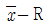
관리도에서 관기계수(Cf)가 0.5 이었다면 이 공정에 대한 판정으로 옳은 것은?- 군구분이 나쁘다.
- 급간변동이 크다.
- 정상적인 관리상태에 있다.
- 대체로 관리상태로 볼 수 있다.
(정답률: 78%)
35. A 병원에서의 환자 처리수가 포아송 분포를 따르는지 알기 위해 적합도 검정을 하고자 한다. 검정 절차에 관한 설명으로 가장 부적절한 것은?
- 검정통계량의 분포는 포아송 분포를 따른다.
- 기대도수는 포아송 확률을 구하여 계산한다.
- 기각이 되면 포아송분포를 따르지 않는다는 뜻이다.
- 귀무가설은 “환자 처리수의 분포는 포아송 분포이다.” 라고 놓는다.
(정답률: 50%)
36. 계수치 샘플링검사 절차 - 제1부 : 로트별 합격품질한계(AQL) 지표형 샘플링검사 방안(KS Q ISO 2859-1 : 2010)에 따라 샘플링 검사를 행할 때, 까다로운 검사에서 보통검사로 전환되는 경우는?
- 전화스코어의 현상값이 30 이상이 된 경우
- 연속 5로트가 초기 검사에서 합격이 된 경우
- 생산 진도가 안정되었다고 소관 권한자가 인정한 경우
- 연속 5로트 이내의 초기 검사에서 2로트가 불합격된 경우
(정답률: 69%)
37. 평균이 10, 분산이 25인 정규분포를 하는 모집단에서 크기 100인 표본을 임의 추출하였을 때 다음의 통계량은 어떤 분포를 하는가? (단,
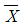
는 표본의 평균치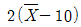
이다.)- t 분포
- x2 분포
- F 분포
- 정규분포
(정답률: 56%)
38. A 기계와 B 기계의 정도(精度)를 비교하기 위하여 각각의 기계로 15개씩의 제품을 가공하였더니 VA= 0.⑤2mm, VB= 0.178mm 가 되었다. 유의수준 5%에서 A 기계의 정도가 B 기계의 정도보다 더 좋다고 할 수 있는지를 검정한 결과로 옳은 것은? (단, F0.95(14, 14)=2.48 이다.)
- A 기계의 정도가 더 좋다고 할 수 있다.
- A 기계의 정도가 더 좋다고 할 수 없다.
- 두 기계의 정도는 같다고 할 수 있다.
- 주어진 데이터로는 판단하기 어렵다.
(정답률: 60%)
39. “통계적으로 유의하다”라는 표현에 관한 설명으로 가장 적절한 것은?
- 통계량이 모수와 같은 값임을 의미한다.
- 검정에 이용되는 통계량의 실현치가 기각역에 들어간다는 것을 의미한다.
- 통계적 해석을 하는데 있어서 귀무가설이 옳음을 의미한다.
- 검정이나 추정을 하는데 있어서 기초가 되는 데이터의 측정시스템이 매우 신뢰할 수 있음을 의미한다.
(정답률: 73%)
40. 2σ의 관리한계선을 갖는 x 관리도에서 공정이 관리상태임에도 불구하고 이상상태라고 신호할 확률은 약 얼마인가? (단, Z가 표준정규변수일 때, P(Z≤1)=0.8413, P(Z≤2)=0.9772, P(Z≤3)=0.9987 이다.)
- 0.0013
- 0.0027
- 0.0228
- 0.0456
(정답률: 34%)
3과목: 생산시스템
41. 4가지 주문작업을 1대의 기계에서 처리하고자 한다. 가공 시간과 각 작업의 납기는 [표]와 같이 주어져 있다. 최대 납기지연을 최소화하기 위한 주문작업의 가공순서는?
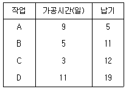
- A-B-C-D
- C-B-A-D
- D-A-B-C
- D-C-B-A
(정답률: 58%)
42. 다음 중 일정계획에서 사용되는 간트도표의 단점을 보완한 기법은?
- EOQ
- FMS
- PERT
- 학습곡선
(정답률: 67%)
43. 8개의 공정을 거쳐 가공되는 어떤 제품의 공정별 소요시간이 [표]와 같을 때 불균형률(Balance delay)은 약 얼마인가?
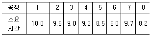
- 9.9%
- 10.5%
- 14.6%
- 11.3%
(정답률: 43%)
44. 다음 로트 사이즈 결정방법 중 동적계획법을 이용하여 재고 유지비와 주문비의 합이 최소가 되도록 주문하는 방법은 무엇인가?
- 부분기간법(Part period algorithm)
- 와그너-위틴(Wagner-Whitin algorithm) 방법
- 고정주문량(Fixed order quantity) 방법
- 경제적 주문량(Economic order quantity) 방법
(정답률: 46%)
45. 표준시간 측정에 쓰이는 시간단위인 1DM은 약 몇초인가?
- 0.1초
- 0.6초
- 6초
- 10초
(정답률: 66%)
46. 다음 중 설비배치의 목적에 해당되지 않는 것은?
- 공간의 효율적 이용
- 설비 및 인력의 증대
- 안전확보와 작업자의 직무만족
- 공정의 균형화와 생산흐름의 원활화
(정답률: 73%)
47. 다음 중 메모동작분석(memomotion analysis)에 적합하지 않은 것은?
- 싸이클 시간이 극히 짧은 작업
- 불규칙적인 싸이클 시간을 갖는 작업
- 집단으로 수행되는 작업자의 활동
- 장기적 연구대상 작업
(정답률: 52%)
48. 공급되는 자재의 품질, 가격, 수량, 납기는 이를 납품하는 공급자와 밀접한 관련이 있다. 그러므로 공급자 선정은 구매관리에 있어서 중요한 업무이다. 다음 중 공급자 선정의 중요 평가 기준으로 보기에 가장 거리가 먼 것은?
- 납품가격
- 재고관리
- 품질수준
- 납기이행률
(정답률: 62%)
49. 다음 중 부문보전의 단점이 아닌 것은?
- 보전책임 소재가 불명확하다.
- 보전기술의 향상이 곤란하다.
- 생산우선으로 보전이 경시된다.
- 특정 설비에 대한 습숙이 곤란하다.
(정답률: 40%)
50. ABC 재고관리 시스템에 대한 설명으로 가장 거리가 먼 것은?
- 저가 볼트(bolt)는 C 품목으로 분류하여 정기발주방식을 취한다.
- A 품목은 C 품목에 비하여 상대적으로 많은 통제노력을 기울여야 한다.
- C 품목은 일반적으로 전체 품목의 50% 정도이지만 연간 사용금액은 5~10% 정도로 비중이 작다.
- ABC 시스템은 재고품목의 연간 사용금액에 따라 품목을 구분하고 통제노력을 차별화하는 시스템이다.
(정답률: 58%)
51. 2인 이상의 작업자가 조를 이루어 협조적으로 작업하는 경우에 사용되며, Gang process chart 라 부르기도 하는 도표는?
- Multi man chart
- Man-machine chart
- Flow Diagram
- Operation process chart
(정답률: 82%)
52. 다음 보기 중 간트도표의 사용범위에 해당하는 것을 모두 나열한 것은?
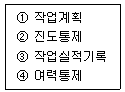
- ①, ②
- ②, ③, ④
- ②, ③
- ①, ②, ③, ④
(정답률: 69%)
53. 생산관리에서 휠 라이트에 의해 제시된 생산과업의 우선 순위 평가기준을 단계별로 바르게 나열한 것은?
- 전략사업 단위 인식 - 과업기준 및 측정의 정의 - 전략 사업 우선순위 결정 - 전략사업 우선순위 평가
- 전략사업 우선순위 평가 - 전략사업 단위 인식 - 과업기준 및 측정의 정의 - 전략 사업 우선순위 결정
- 전략 사업 우선순위 결정 - 전략사업 우선순위 평가 - 전략사업 단위 인식 - 과업기준 및 측정의 정의
- 과업기준 및 측정의 정의 - 전략사업 단위 인식 - 전략 사업 우선순위 결정 - 전략 사업 우선순위 결정
(정답률: 54%)
54. 시계열 분석시 인구변동이나 소득수준의 변화 등에 의해서 발생되는 변동을 무엇이라 하는가?
- 경기변동
- 계절변동
- 추세변동
- 불규칙변동
(정답률: 57%)
55. 뱃치 생산시스템에 가장 적합한 설비배치의 형태는?
- 그룹별 배치
- 기능별 배치
- 공정별 배치
- 프로젝트 배치
(정답률: 52%)
56. 고정비(F), 변동비(V), 개당판매가격(P), 생산량(Q)이 주어졌을 때 손익분기점을 산출하는 식은?
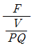
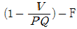
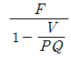
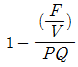
(정답률: 65%)
57. 원자재를 가공하여 제품을 생산하는 제조공장을 대상으로 수행하는 방법연구에서 작업구분이 큰 것부터 순서대로 나열한 것은?
- 공정 - 요소작업 - 동작요소 - 단위작업
- 공정 - 단위작업 - 동작요소 - 요소작업
- 공정 - 단위작업 - 요소작업 - 동작요소
- 공정 - 요소작업 - 단위작업 - 동작요소
(정답률: 69%)
58. 적시생산시스템(JIT)의 특징이 아닌 것은?
- 푸쉬(push) 방식의 자재흐름을 가진다.
- 생산의 평준화를 위해 소로트화를 추구한다.
- 작업자의 다기능공화로 작업의 유연성을 높힌다.
- 공급자와는 긴밀한 유대관계로 사내 생산팀의 한 공정처럼 운영한다.
(정답률: 78%)
59. 다음 중 작업주기가 길거나 활동내용이 일정하지 않은 비반복적인 작업을 측정하는데 적합하며, 표본이론의 응용과 무작위 표본추출의 이론을 적용한 통계적 표준시간 측정 기법은 무엇인가?
- PTS법
- 스톱워치법
- 워크샘플링법
- 표준요소자료법
(정답률: 69%)
60. 정기수리 후의 시동시, 장시간 정지 후의 시동시, 휴일 후의 시동시, 점심시간 후의 시동시 발생하는 손실을 무엇이라 하는가?
- 순간정지손실
- 초기수율손실
- 준비작업조정손실
- shut down 손실
(정답률: 50%)
4과목: 신뢰성관리
61. 어떤 제품의 수명은 지수분포를 따르며 평균수명이 10000 시간이다. 이 제품은 이미 500 시간을 사용하였으며, 앞으로 1000 시간을 더 사용할 때 고장 없이 작업을 수행할 신뢰도는 약 얼마인가?
- 86.06%
- 90.48%
- 93.48%
- 95.12%
(정답률: 60%)
62. ESS(Environmental Stress Screening)에서 임의진동 스트레스에 의하여 확인될 수 있는 일반적인 고장모드가 아닌 것은?
- 입자 오염 및 끊어진 와이어
- 두 부품단락 및 기계적 결함
- 결함수정 및 인접모드와의 마찰
- 밀폐 실(sael) 고장 및 미세크랙
(정답률: 42%)
63. 고장 메커니즘에 따른 시험에 의해 잠재결점을 포함하는 아이템을 제거하는 것을 무엇이라 하는가?
- 결점(defect)
- 가속수명시험
- 디레이팅(derating)
- 스크리닝(Screening)
(정답률: 59%)
64. 20개의 장비에 대한 신뢰성시험 결과 5회의 고장이 발생하였으며, 고장시간은 110, 180, 300, 410, 480 시간이었다. 고장난 장비의 교환은 허용되지 않으며, 500시간에 시험이 종료되었다면 MTTF는 몇 시간인가?
- 296hr
- 1596hr
- 1796hr
- 1996hr
(정답률: 62%)
65. 지수분포의 수명을 갖는 부품 3개를 직렬로 연결하였다. 각 부품의 평균수명이 1000시간, 500시간, 500시간이라면 이 시스템의 평균수명은 몇 시간인가?
- 200
- 500
- 667
- 2000
(정답률: 53%)
66. 평균수명이 500시간 정도 되는지를 판정하기 위해 샘플을 10개로 하여 고장난 것은 즉시 새 것으로 교체하면서 3번째 고장이 발생할 때까지 시험하고자 한다. 3번째 고장시간이 얼마라야 평균수명을 500시간으로 추정할 수 있겠는가?
- 150시간
- 300시간
- 500시간
- 650시간
(정답률: 52%)
67. 50% 중앙순위법(median rank)을 사용하여 t 시점에서의 신뢰도 R(t)의 추정식으로 옳은 것은? (단, i는 i번째 고장 순위를 나타내며, n은 아이템수이다.)
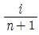
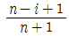
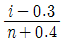
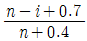
(정답률: 59%)
68. 2개의 동일한 부품으로 이루어진 대기 리던던시에서 t=50 에서의 신뢰도는 약 얼마인가? (단, 부품의 고장률은 0.02로 일정하고 지수분포를 따른다.)
- 0.368
- 0.632
- 0.736
- 0.812
(정답률: 48%)
69. Y회사에서는 와이블 분포에 의거하여 제품의 고장시간 데이터를 해석하고, 그 신뢰도를 추정하고 있다. 다음 중 그 이유로서 가장 적절한 것은?
- 고장률이 DFR에 따르기 때문에
- 고장률이 CFR에 따르기 때문에
- 고장률이 IFR에 따르기 때문에
- 고장률이 어떤 패턴에 따르는지 모르기 때문에
(정답률: 68%)
70. 강도는 평균 4000psi, 표준편차 400psi인 정규분포를 따르고, 부하는 평균 3000psi, 표준편차 300psi인 정규분포를 따를 경우에 부품의 신뢰도는 얼마인가?
- 0.8534
- 0.9545
- 0.9772
- 0.9912
(정답률: 68%)
71. 고장확률밀도함수 f(t)=0.00⑤e-0.00⑤t인 지수분포를 따르는 제품이 있다. 이 제품의 평균수명은 몇 시간인가?
- 446.3
- 1386
- 2000
- 46⑤.2
(정답률: 69%)
72. 고장률이 λ로 동일한 n개의 부품이 병렬로 연결되어 있을 때 시스템의 평균수명을 표현한 식은?
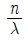
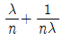
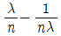
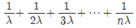
(정답률: 75%)
73. 어떤 시스템을 60시간 동안(수리시간 포함) 연속사용한 경우 5회의 고장이 발생하였고, 각각의 수리시간이 1.0, 1.0, 2.0, 3.0, 3.0 시간이었다면 이 시스템의 가용도(Availability)는 약 얼마인가?
- 80%
- 83%
- 88%
- 89%
(정답률: 59%)
74. 신뢰성 계수축차 샘플링 검사에서 β=0.1, 로트허용고장률(LTFR) λ1=0.0⑤/시간, 합격고장률(AFR) λ0=0.001/시간이라면, 합격 판정선의 기울기(S)는 약 얼마인가?
- 302
- 321.89
- 402.36
- 1609.44
(정답률: 39%)
75. FT도에서 기본사상의 고장이 발생하는 확률이 각각 0.02, 0.01 일 때 정상사상 A의 고장이 발생하는 확률은?
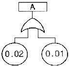
- 0.0002
- 0.0298
- 0.9702
- 0.9998
(정답률: 57%)
76. 예방보전과 사후보전을 모두 실시할 때의 보전성의 척도는 무엇인가?
- 수리율
- 평균정지시간(MDT)
- 보전도 함수
- 평균수리시간(MTTR)
(정답률: 54%)
77. 신뢰도 배분에 대한 설명으로 가장 거리가 먼 것은?
- 신뢰도 배분은 설계 초기단예에 이루어진다.
- 신뢰도 배분은 과거 고장률 데이터가 있어야 할 수 있다.
- 시스템의 신뢰성 목표를 서브시스템으로 배분하는 것을 말한다.
- 신뢰도 배분을 위해서는 시스템의 신뢰도 블록 다이어그램이 필요하다.
(정답률: 57%)
78. 다음 중 가장 높은 신뢰도 값을 가지는 것은? (단, 숫자는 해당 부품의 신뢰도 값이다.)
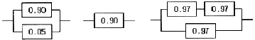
- (A)
- (B)
- (C)
- (A), (C)
(정답률: 69%)
79. [표]와 같은 수명시험 자료에서 구간 20~30시간 에서의 고장률은 얼마인가?
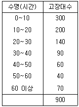
- 0.033/hr
- 0.035/hr
- 0.037/hr
- 0.039/hr
(정답률: 54%)
80. 신뢰성에 관한 설명으로 옳지 않은 것은?
- 고유 신뢰성에서 특히 중시되는 것은 설계기술이다.
- 사용과정에서 나타는 고유 신뢰성은 인간의 요소에 밀접하게 관계된다.
- 과거 경험을 토대로 사용조건을 고려한 설계는 물론, 사용 신뢰성도 고려해 제품이 설계, 제조되어야 한다.
- 제품의 신뢰성을 생각할 때 제조자 측과 사용자 측의 입장을 분리해서 고유 신뢰성과 사용 신뢰성으로 나눈다.
(정답률: 57%)
5과목: 품질경영
81. 다음은 제조물책임법 전문 제1조이다. 빈칸에 가장 적합한 표현은?
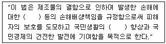
- 제조업자, 복지
- 제조업자, 안전
- 제조업자, 민생
- 구매업자, 복지
(정답률: 67%)
82. 기능별 관리에 대한 설명으로 옳지 않은 것은?
- 방침관리가 수직적인데 비해 기능별 관리는 수평적이며 경영요소별 관리라고도 한다.
- 기능별 관리는 계층구조의 조직을 채택하고 있는 기업에게 각 부문이 임무를 수행하기 위해서 하는 활동이다.
- 기능별 관리는 업종, 규모, 경영방침에 따라 차이는 있지만 대개 생산목표인 품질, 원가, 납기를 중심으로 품질보증, 원가관리, 생산량 관리가 제시된다.
- 기능별 관리는 기능별로 전사적인 목표를 정해서 이를 각 부문의 업무와 횡적으로 연결하여 그 기능에 대한 의사통일을 도모하고, 유기적인 관계에서 목표달성을 전개하는 전사적인 활동이다.
(정답률: 46%)
83. 대응하는 2개(한쌍)데이터의 상호관계를 보기 위한 것은?
- 산점도
- 체크시트
- 특성요인도
- 히스토그램
(정답률: 69%)
84. 기업이 품질정보시스템을 구축해야 하는 당위성과 가장 관계가 먼 것은?
- 고객 및 협력업체와의 신속 정확한 인터페이스
- 품질관리 관련 기법의 자동화
- 품질업무 표준화에 따른 신속한 업무 추진
- 품질경영 성과의 실시간 측정
(정답률: 48%)
85. 신QC 7가지 도구 중에서 적합한 일정계획을 세워 효율적으로 관리하는 수법은?
- PDPC법
- 에로우다이아그램법
- 연관도법
- 매트릭스데이터해석법
(정답률: 58%)
86. Y제품의 치수가공을 관리하기 위해서 그림참조 관리도를 이용하고자 한다. 관리도의 작성을 위해 n=5인 부분군 25개를 추출하여 결과를 정리하니
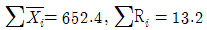
이었다. 주어진 치수의 규격은 26.0±1.0mm 라고 하면, 공정능력지수 Cp는 약 얼마인가? (단, n=5일 때 A2=0.58, D4=2.11, d2=2.326 이다.)- 1.47
- 1.33
- 0.99
- 0.73
(정답률: 58%)
87. 제품의 품질과 관련된 감사의 유형분류 시 감사대상에 따라 분류할 때 잘못된 것은?
- 제품감사
- 사내감사
- 공정감사
- 품질시스템감사
(정답률: 55%)
88. 다음 중 성분분석 및 시험방법, 제품검사방법, 사용방법에 대한 내용을 규정한 규격은?
- 방법규격
- 제품규격
- 전달규격
- 기본규격
(정답률: 59%)
89. 동일제품을 반복측정하여 얻은 평균치와 참값과의 차이를 무엇이라고 하는가?
- 오차
- 치우침
- 신뢰성
- 정밀도
(정답률: 44%)
90. 품질전략을 수립 할 때 계획단계(전략의 형성단계)에서 SWOT 분석을 많이 활용하고 있다. 여기서 SWOT 분석시 고려되는 항목이 아닌 것은?
- 성장기회(opportunity)
- 근심(trouble)
- 강점(strength)
- 약점(weakness)
(정답률: 82%)
91. 공정의 산포가 규격의 최대, 최소치의 차보다 충분히 작고 중심이 안정된 경우의 조치사항으로 가장 거리가 먼 것은?
- 현행 제조공정의 관리를 계속한다.
- 관리한계선을 벗어나는 제품은 원인을 철저히 규명하여야 한다.
- 실험을 계획하여 공정의 산포를 감소시킨다.
- 검사주기를 늘리거나 간소화 한다.
(정답률: 66%)
92. 품질분임조활동에서 주제 선정의 원칙으로 틀린 것은?
- 구체적인 주제이어야 한다.
- 금액효과가 큰 것만을 테마로 한다.
- 조원들 전원에게 공통적인 것이 좋다.
- 단기간에 해결 가능한 것이 좋다.
(정답률: 76%)
93. 산업규격은 적용되는 지역과 범위에 따라 분류할 수 있는데 이에 해당된다고 볼 수 없는 것은?
- 사내규격
- 국가규격
- 국제규격
- 전달규격
(정답률: 62%)
94. 공정의 치우침이 없을 경우 6시그마 품질수준에서의 공정 부적합품률은 약 몇 ppm인가?
- 0.002
- 1
- 3.4
- 233
(정답률: 48%)
95. 품질보증과 시장 경쟁력을 위해선 고객의 소리에 귀를 기울여야 한다. 다음 중에서 고객의 소리를 듣는 방법으로 가장 거리가 먼 내용은?
- 기업에서는 제품에 대한 불만이나 개선점에 대한 고객의 소리를 위하여 수신자 부담 전화를 개설하고, 24시간 개방하고 있다.
- 고객들은 품질보다는 개성으로 제품을 선호하는 경향이 있다. 처음부터 타회사 제품을 선호하는 고객은 고객의 소리에서 제외한다.
- 고객은 제품에 불만 있으면 모든 것을 말하기 보다는 행동으로 다음에는 해당제품을 구매하지 않는다. 기업에선 이러한 현상을 찾아내기 위하여 주요고객의 흐름을 관심있게 추적한다.
- 고객과 가장 밀접한 영업사원들의 정보를 중시해야한다. 영업사원들의 보고서를 다음 제품계획시 반영해야 한다.
(정답률: 67%)
96. 품질경영시스템-요구사항(KS Q ISO 9001:2009)에서 부적합의 재발방지를 목적으로 부적합의 원인을 제거하기 위한 조치는?
- 시정조치
- 예방조치
- 내부감사
- 경영검토
(정답률: 66%)
97. 광공업에서 시험을 실시하는 장소의 표준 상태의 온도는 시험 목적에 따라서 다르다. 다음 중 표준상태의 온도로 사용하지 않는 것은?
- 17℃
- 20℃
- 23℃
- 25℃
(정답률: 76%)
98. 파라슈라만(Parasuraman) 등이 SERVQUAL 모형에서 제시한 서비스 품질의 5가지 특성(서비스품질의 결정요소)이 아닌 것은?
- 신뢰성(reliability)
- 유형성(tangibles)
- 반응성(responsivenss)
- 추적성(tracibles)
(정답률: 62%)
99. 회사규격의 개정이 필요한 경우를 설명한 것 중 가장 관계가 먼 내용은?
- 관련 국가규격이 개정된 경우
- 제조공정의 변경 또는 개선으로 필요한 경우
- 공업기술의 향상으로 필요한 경우
- 생산품목의 변경이나 공정축소 등으로 현행 규격이 필요 없을 경우
(정답률: 44%)
100. 부문별로 품질 코스트를 집계할 때 각 부문의 책임이 틀린 것은?
- 연구부문의 책임 : 연구개발설계의 미스에 의한 것
- 영업부문의 책임 : 외주선정 미스, 출고 미스 등에 의한 것
- 생산기술부문의 책임 : 치공구, 표준설정 등의 미스에 의한 것
- 제조부문의 책임 : 제조공정상의 미스에 의한 것
(정답률: 55%)
t0 = r * sqrt(n-2) / sqrt(1-r^2)
여기서, r은 상관계수, n은 표본의 크기이다.
따라서, t0 = 0.61 * sqrt(150-2) / sqrt(1-0.61^2) = 9.365
따라서, 정답은 "9.365"이다.